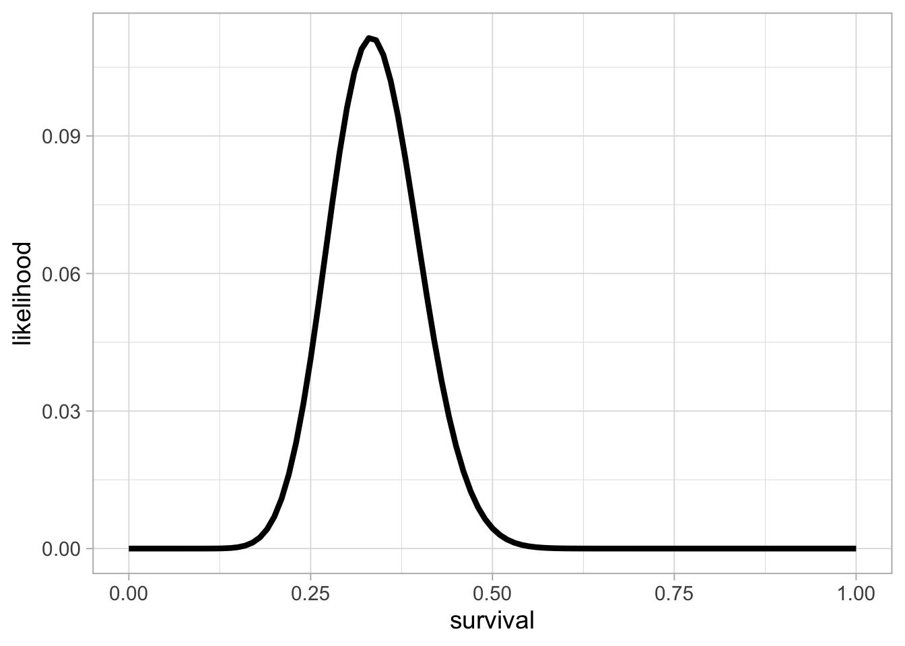

- 1 Hidden Markov models
1.3 A Markov model for longitudinal data
Let’s think of a model for these data. The objective remains the same, estimating survival. To build this model, we’ll make assumptions, go through its components and write down its likelihood. Note that we have already encountered Markov models in Section ??.
1.3.1 Assumptions
First, we assume that the state of an animal in a given winter, alive or dead, is only dependent on its state the winter before. In other words, the future depends only on the present, not the past. This is a Markov process.
Second, if an animal is alive in a given winter, the probability it survives to the next winter is \(\phi\). The probability it dies is \(1 - \phi\).
Third, if an animal is dead a winter, it remains dead, unless you believe in zombies.
Our Markov process can be represented this way:

An example of this Markov process is, for example:

Here the animal remains alive over the first two time intervals \((z_{i,1} = z_{i,2} = z_{i,3} = 1)\) with probability \(\phi\) until it dies over the fourth time interval \((z_{i,4} = 2)\) with probability \(1-\phi\) then remains dead from then onwards \((z_{i,5} = 2)\) with probability 1.
1.3.2 Transition matrix
You might have figured it out already (if not, not a problem), the core of our Markov process is made of transition probabilities between states alive and dead. For example, the probability of transitioning from state alive at \(t-1\) to state alive at \(t\) is \(\Pr(z_{i,t} = 1 | z_{i,t-1} = 1) = \gamma_{1,1}\). It is the survival probability \(\phi\). The probability of dying over the interval \((t-1, t)\) is \(\Pr(z_{i,t} = 2 | z_{i,t-1} = 1) = \gamma_{1,2} = 1 - \phi\). Now if an animal is dead at \(t-1\), then \(\Pr(z_t = 1 | z_{t-1} = 2) = 0\) and \(\Pr(z_{i,t} = 2 | z_{i,t-1} = 2) = 1\).
We can gather these probabilities of transition between states from one occasion to the next in a matrix, say \(\mathbf{\Gamma}\), which we will call the transition matrix:
\[\begin{align*} \mathbf{\Gamma} = \left(\begin{array}{cc} \gamma_{1,1} & \gamma_{1,2}\\ \gamma_{2,1} & \gamma_{2,2} \end{array}\right) = \left(\begin{array}{cc} \phi & 1 - \phi\\ 0 & 1 \end{array}\right) \end{align*}\]
To try and remember that the states at \(t-1\) are in rows, and the states at \(t\) are in columns, I will often write:
\[\begin{matrix} & \\ \mathbf{\Gamma} = \left ( \vphantom{ \begin{matrix} 12 \\ 12 \end{matrix} } \right . \end{matrix} \hspace{-1.2em} \begin{matrix} z_t=1 & z_t=2 \\ \hdashline \phi & 1-\phi \\ 0 & 1 \end{matrix} \hspace{-0.2em} \begin{matrix} & \\ \left . \vphantom{ \begin{matrix} 12 \\ 12 \end{matrix} } \right ) \begin{matrix} z_{t-1}=1 \; \mbox{(alive)} \\ z_{t-1}=2 \; \mbox{(dead)} \end{matrix} \end{matrix}\]
Take the time you need to navigate through this matrix, and get familiar with it. For example, you may start alive at \(t\) (first row) then end up dead at \(t+1\) (first column) with probability \(1-\phi\).
1.3.3 Initial states
A Markov process has to start somewhere. We need the probabilities of initial states, i.e. the states of an individual at \(t = 1\). We will gather the probability of being in each state (alive or 1 and dead or 2) in the first winter in a vector. We will use \(\mathbf{\delta} = \left(\Pr(z_{i,1} = 1), \Pr(z_{i,1} = 2)\right)\). For simplicity, we will assume that all individuals are marked and released in the first winter, hence alive when first captured, which means that they are all in state alive or 1 for sure. Therefore we have \(\mathbf{\delta} = \left(1, 0\right)\).
1.3.4 Likelihood
Now that we have built a Markov model, we need its likelihood to apply the Bayes theorem. The likelihood is the probability of the data, given the model. Here the data are the \(z\), therefore we need \(\Pr(\mathbf{z}) = \Pr(z_1, z_2, \ldots, z_{T-2}, z_{T-1}, z_T)\).
We’re gonna work backward, starting from the last sampling occasion. Using conditional probabilities, the likelihood can be written as the product of the probability of \(z_T\) i.e. you’re alive or not on the last occasion given your past history, that is the states at previous occasions, times the probability of your past history:
\[\begin{align*} \Pr(\mathbf{z}) &= \Pr(z_T, z_{T-1}, z_{T-2}, \ldots, z_1) \color{white}{\Pr(z_{T-1}, z_{T-2},\ldots, z_1) \Pr(z_{T-2}, \ldots, z_1)}\\ &= \color{blue}{\Pr(z_T | z_{T-1}, z_{T-2},\ldots, z_1) \Pr(z_{T-1}, z_{T-2},\ldots, z_1)} \\ \end{align*}\]
Then because we have a Markov model, we’re memory less, that is the probabilty of next state, here \(z_T\), depends only on the current state, that is \(z_{T-1}\), and not the previous states:
\[\begin{align*} \Pr(\mathbf{z}) &= \Pr(z_T, z_{T-1}, z_{T-2}, \ldots, z_1) \color{white}{\Pr(z_{T-1}, z_{T-2},\ldots, z_1) \Pr(z_{T-2}, \ldots, z_1)}\\ &= \Pr(z_T | z_{T-1}, z_{T-2},\ldots, z_1) \Pr(z_{T-1}, z_{T-2},\ldots, z_1) \\ &= \color{blue}{\Pr(z_T | z_{T-1})} \Pr(z_{T-1}, z_{T-2},\ldots, z_1) \\ \end{align*}\]
You can apply the same reasoning to \(T-1\). First use conditional probabilities:
\[\begin{align*} \Pr(\mathbf{z}) &= \Pr(z_T, z_{T-1}, z_{T-2}, \ldots, z_1) \color{white}{\Pr(z_{T-1}, z_{T-2},\ldots, z_1) \Pr(z_{T-2}, \ldots, z_1)}\\ &= \Pr(z_T | z_{T-1}, z_{T-2},\ldots, z_1) \Pr(z_{T-1}, z_{T-2},\ldots, z_1) \\ &= \Pr(z_T | z_{T-1}) \Pr(z_{T-1}, z_{T-2},\ldots, z_1) \\ &= \Pr(z_T | z_{T-1}) \color{blue}{\Pr(z_{T-1} | z_{T-2}, \ldots, z_1) \Pr(z_{T-2}, \ldots, z_1)}\\ \end{align*}\]
Then apply the Markovian property:
\[\begin{align*} \Pr(\mathbf{z}) &= \Pr(z_T, z_{T-1}, z_{T-2}, \ldots, z_1) \color{white}{\Pr(z_{T-1}, z_{T-2},\ldots, z_1) \Pr(z_{T-2}, \ldots, z_1)}\\ &= \Pr(z_T | z_{T-1}, z_{T-2},\ldots, z_1) \Pr(z_{T-1}, z_{T-2},\ldots, z_1) \\ &= \Pr(z_T | z_{T-1}) \Pr(z_{T-1}, z_{T-2},\ldots, z_1) \\ &= \Pr(z_T | z_{T-1}) \Pr(z_{T-1} | z_{T-2}, \ldots, z_1) \Pr(z_{T-2}, \ldots, z_1)\\ &= \Pr(z_T | z_{T-1}) \color{blue}{\Pr(z_{T-1} | z_{T-2})} \Pr(z_{T-2}, \ldots, z_1)\\ \end{align*}\]
And so on up to \(z_2\). You end up with this expression for the likelihood:
\[\begin{align*} \Pr(\mathbf{z}) &= \Pr(z_T, z_{T-1}, z_{T-2}, \ldots, z_1) \color{white}{\Pr(z_{T-1}, z_{T-2},\ldots, z_1) \Pr(z_{T-2}, \ldots, z_1)}\\ &= \Pr(z_T | z_{T-1}, z_{T-2},\ldots, z_1) \Pr(z_{T-1}, z_{T-2},\ldots, z_1) \\ &= \Pr(z_T | z_{T-1}) \Pr(z_{T-1}, z_{T-2},\ldots, z_1) \\ &= \Pr(z_T | z_{T-1}) \Pr(z_{T-1} | z_{T-2}, \ldots, z_1) \Pr(z_{T-2}, \ldots, z_1)\\ &= \Pr(z_T | z_{T-1}) \Pr(z_{T-1} | z_{T-2}) \Pr(z_{T-2}, \ldots, z_1)\\ &= \ldots \\ &= \color{blue}{\Pr(z_T | z_{T-1}) \Pr(z_{T-1} | z_{T-2}) \ldots \Pr(z_{2} | z_{1}) \Pr(z_{1})}\\ \end{align*}\]
This is a product of conditional probabilities of states given previous states, and the probability of initial states \(\Pr(z_1)\). Using a more compact notation for the product of conditional probabilities, we get:
\[\begin{align*} \Pr(\mathbf{z}) &= \Pr(z_T, z_{T-1}, z_{T-2}, \ldots, z_1) \color{white}{\Pr(z_{T-1}, z_{T-2},\ldots, z_1) \Pr(z_{T-2}, \ldots, z_1)}\\ &= \Pr(z_T | z_{T-1}, z_{T-2},\ldots, z_1) \Pr(z_{T-1}, z_{T-2},\ldots, z_1) \\ &= \Pr(z_T | z_{T-1}) \Pr(z_{T-1}, z_{T-2},\ldots, z_1) \\ &= \Pr(z_T | z_{T-1}) \Pr(z_{T-1} | z_{T-2}, \ldots, z_1) \Pr(z_{T-2}, \ldots, z_1)\\ &= \Pr(z_T | z_{T-1}) \Pr(z_{T-1} | z_{T-2}) \Pr(z_{T-2}, \ldots, z_1)\\ &= \ldots \\ &= \Pr(z_T | z_{T-1}) \Pr(z_{T-1} | z_{T-2}) \ldots \Pr(z_{2} | z_{1}) \Pr(z_{1})\\ &= \color{blue}{\Pr(z_{1}) \prod_{t=2}^T{\Pr(z_{t} | z_{t-1})}}\\ \end{align*}\]
In the product, you can recognize the transition parameters \(\gamma\) we defined above, so that the likelihood of a Markov model can be written as:
\[\begin{align*} \Pr(\mathbf{z}) &= \Pr(z_T, z_{T-1}, z_{T-2}, \ldots, z_1) \color{white}{\Pr(z_{T-1}, z_{T-2},\ldots, z_1) \Pr(z_{T-2}, \ldots, z_1)}\\ &= \Pr(z_{1}) \prod_{t=2}^T{\gamma_{z_{t-1},z_{t}}}\\ \end{align*}\]
1.3.5 Example
I realise these calculations are a bit difficult to follow. Let’s take an example to fix ideas. Let’s assume an animal is alive, alive at time 2 then dies at time 3. We have \(\mathbf{z} = (1, 1, 2)\). What is the contribution of this animal to the likelihood? Let’s apply the formula we just derived:
\[\begin{align*} \Pr(\mathbf{z} = (1, 1, 2)) &= \Pr(z_1 = 1) \; \gamma_{z_{1} = 1, z_{2} = 1} \; \gamma_{z_{2} = 1, z_{3} = 2}\\ &= 1 \; \phi \; (1 - \phi). \end{align*}\]
The probability of having the sequence alive, alive and dead is the probability of being alive first, then to stay alive, eventually to die. The probability of being alive at first occasion being 1, we have that the contribution of this individual to the likelihood is \(\phi (1 - \phi)\).